A new randomized way to play a classic, world-renowned game.
New dungeon designs
An experience point based leveling system
Enemies that get stronger as you level up
New upgrades: things you always wanted, or didn't know you wanted until you see them in action
This isn't your grandparents' Legend of Zelda (but they'll enjoy it too).
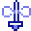
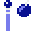
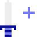
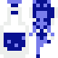
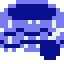
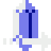
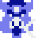
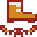
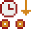
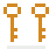
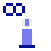
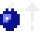
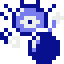
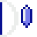
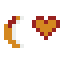
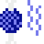
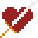
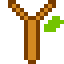
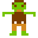
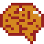
BETA 0.400
CONTENTS
Before You Begin3
Building Your Game4
The Title and File Screens5
What's New6
Experience and Levels7
Enemies That Grow With You8
The Overworld9
Dungeons and Shrines10
Level 912
How Items Are Offered13
Old Men Cards and XP Bags14
Upgrade Caves15
Upgrade Catalog16
Heart Snubber and Zombie Link23
The Triforce Caves24
Secret Modes25
The End of Your Quest26
Old Men's Hints and Tips27
Legend of Link is a fan-made rework. It needs your own copy of the original game, and the randomizer page builds a patch for it in your browser.
2
BEFORE YOU BEGIN
Long ago the land was mapped, its caves were known and every dungeon was the same each time a hero set out. No more.
In Legend of Link the dungeons are built fresh for every seed, the caves hide different things behind every door, and Link grows stronger with every enemy he defeats. Shopkeepers sell new upgrades, dungeons hide old men cards that bring better treasure, and four shrines wait alongside the nine levels.
The enemies grow too. As Link gains heart containers, some of them become something more dangerous.
This booklet explains everything that is different from the original adventure. The controls:
Control Pad
Move Link
A Button
Swing the sword
B Button
Use the item chosen on the item screen
START
Open the item screen (pause)
SELECT
Swap items
HINT Read the old men's hints. In Legend of Link they talk about this seed's upgrades and secrets.
3
BUILDING YOUR GAME
Open the Legend of Link randomizer page and choose your own Legend of Zelda (USA) ROM, either PRG0 or PRG1. Everything happens in your browser, and your ROM is never uploaded.
Settings
Seed (numbers only)
The seed decides the whole game: dungeons, caves, upgrades and hints. Players with the same seed and settings play the same game. Leave it blank and one is picked for you.
Dungeon set
Where the dungeon shapes come from: Legend of Link's own maps, the 1st, 2nd, 3rd or 4th Quest shapes, random shapes, Chaos (any four grids; any design can be any level or shrine, levels 7-9 at least 25 rooms) or Mixed (each level from any set). Shrines always use Legend of Link maps or random shapes.
Link's colors
His tunic color with no ring, the blue ring and the red ring. "From your ROM" keeps your ROM's colors.
Reduce flashing
Turns off the screen flashes: a bomb's blast, picking up a triforce, the Triforce of Power and the ending. It only changes how the game looks: the seed and its code stay the same.
Race Rom
Scrambles the map, dungeon and cave data inside the ROM, so map viewers and ROM tools can't show the seed. Race Roms get their own seed code.
Mix enemy groups
Deals the enemies into new groups, so new mixes of enemies meet in dungeons and on the overworld.
Unseeded
The old way: each new file deals its own dungeons and caves inside the game.
Press Build and download either the finished game or an IPS patch.
CUSTOM GRAPHICS A ROM whose only changes are the sprites of Link, the items and the enemies, the background tiles (bushes, Armos statues, walls...), the title screen's graphics, or Link's colors, works too: your graphics and colors are kept. Anything else changed (other colors included) and the page turns it down.
4
THE TITLE AND FILE SCREENS
The title screen shows the version and your seed.
Wait at the title screen and the story scroll is replaced by a list of every upgrade the caves can sell: Upgrades to Buy with Rupees.
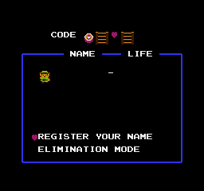
The seed code beside CODE.
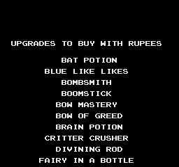
The upgrade list on the title screen.
The Seed Code
There is only one save file, so the file screen's heading now reads CODE followed by four item pictures. They are worked out from your finished game. When your four pictures match a friend's, you are both playing exactly the same game. The randomizer page shows the same four pictures, with their names, under its download buttons.
5
WHAT'S NEW
Experience. Defeating enemies earns XP. Every 50 XP gives a heart container, up to 16.
Enemies grow with you. Some enemies change as Link gains hearts.
New dungeons every seed. Nine levels and four shrines (A-D), each with its own nickname.
Every door is a surprise. Each cave, shop and dungeon entrance on the overworld is dealt out at random.
Old men offer choices. In each level an old man lets you take one of two items.
Shrines and prizes. Beat a shrine's guardian to claim its prize.
Upgrades. 41 upgrades for sale, three upgrade caves to find, and one purchase in each.
Old men cards. Collect cards in dungeons that bring better items from shops, old men and shrines.
New items. The bomb upgrade, the blue book and XP bags.
Triforce caves. Rewards for 4 and for all 8 triforce pieces.
Secret modes. Swordless and Hard mode can be found in any game.
A final report. Your time, cards, upgrades and treasure after the credits.
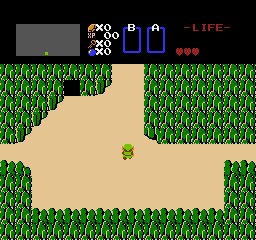
The XP count sits below the rupees on the status bar.
6
EXPERIENCE AND LEVELS
Every enemy is worth some experience (XP). The higher Link's level, the less XP ordinary enemies give him, until the weakest ones give nothing at all. Bosses always give their full XP, whatever his level.
Every 50 XP (100 in Hard mode) gives Link a new heart container, up to 16. The XP count is shown on the status bar.
Link's Level
Link's level is his number of heart containers. It decides which items the old men, shrines and shops offer, which enemies have grown stronger, and which upgrades appear. Old men cards raise the level used for offers (see page 14).
XP BAGS Keep an eye out for them, in dungeon cellars and elsewhere. An orange bag gives 15 XP and a blue bag 25.
7
ENEMIES THAT GROW WITH YOU
Enemies watch Link's heart containers. When he reaches these, they change. In Hard mode they change 3 hearts sooner.
Hearts
Enemies
8
Red Moblins, Gibdos, Ropes, Stalfos
9
Red Darknuts
10
Red Octoroks, Pols Voice, Dodongos, Aquamentus
12
Blue Goriyas, Wallmasters, Vires, Gleeok
14
Red Wizzrobes, Gohma
15
Patras
16
Ganon
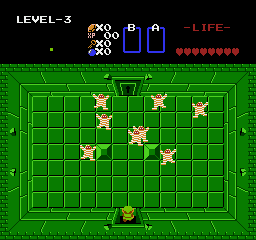
Orange Gibdos.
HINT Listen to the old men. They know a thing or two about these.
8
THE OVERWORLD
The overworld map is the one you know, but what waits behind each cave, door and staircase is dealt out for every seed. Only the wood sword cave stays where it was. The 71 entrances hold:
Levels 1-9
9
Upgrade caves
3
Shrines A-D
4
Gambling caves
5
Shops
12
Secret rupees (10, 30, 100)
13
4-triforce cave
1
8-triforce cave
1
Hint caves
all the rest
Shops
Shops offer three items picked for Link's level. The offer changes as he gains hearts or shop cards. One shop is special: it sells as if Link were one level higher.
Hint Caves
Old men share hints: some about dungeons and enemies, some about the upgrades for sale in this seed, and some just for fun. Each hint cave has its own quote.
Burning Bushes
The blue candle can only burn brown bushes. The red candle burns both green and brown bushes.
HINT Play some music in the forest two screens south of the big bridge.
9
DUNGEONS AND SHRINES
Every level and shrine is built from a design with a nickname, such as the Robber, the Piranha or the Sock Puppet. The seed decides each level's design, enemies, colors, boss and treasure.
Levels 1-8
An old man with a choice of items. Take one and the other disappears.
A triforce piece.
Old men cards or XP bags in the cellars.
At least one blue potion.
Shrines A-D
Shrines are smaller dungeons with a guardian boss. Beat it to reach the shrine's prize, an item picked for Link's level. The status bar reads SHRINE-A to SHRINE-D.
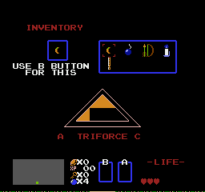
Shrine letters beside TRIFORCE: here A and C are done.
10
DUNGEONS AND SHRINES (CONT.)
The Item Screen
Once a shrine's prize is taken, its letter appears beside the word TRIFORCE: A and B on the left, C and D on the right.
Roars
In Level 9 and the shrines, the rooms next to Ganon or a shrine's guardian echo with its roar while it lives. Follow the sound.
Secret Walls
With the X-ray Glasses, walls you can bomb glow grey and walls you can walk through glow orange.
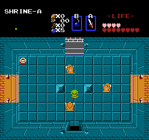
X-ray Glasses: a grey bomb wall above, orange walk-through walls to each side.
DUNGEON SETS With quest shapes, only the shape of the old dungeon is borrowed. Doors, rooms, enemies and items are all new.
11
LEVEL 9
An old man guards Level 9's entrance. He will not let Link pass until he holds all 8 triforce pieces.
Level 9's compass points to Princess Zelda's room.
Its item staircase gives the next thing Link is missing from: a book, a ring, a sword, arrows or the magic key. With all of them, a red potion.
Ganon waits within. With Ganon Visible he cannot hide, and with Ganon Boomerang your boomerang wounds him.
HINT The 8-triforce cave (page 24) has a reward waiting once you have all eight pieces.
12
HOW ITEMS ARE OFFERED
Dungeon old men, shrine prizes and shops each have their own list of items for every level from 1 to 16. The seed shuffles each list, putting likelier items toward the front.
When an offer is made, the game walks down the list for Link's level and gives the first items he can use. Items he owns are skipped, and so is anything he isn't ready for yet.
First Things First
If the list lands on a better version of an item Link doesn't have yet, he gets the first version instead:
The list says
Without
You get
Magical sword
White sword
White sword
Red candle
Blue candle
Blue candle
Red ring
Blue ring
Blue ring
Silver arrows
Wood arrows
Wood arrows
Blue book
Red book
Red book
An old man's offer and a shrine's prize are fixed the first time Link enters the room. Shops change as Link gains hearts or shop cards.
BLUE BOOK A new, stronger book. Like the red book, it makes all of Link's weapons deal more damage.
13
OLD MEN CARDS AND XP BAGS
Old men cards are collected in dungeons. Each card adds one level, for one kind of offer, to the level Link's offers are picked by. That brings better items sooner. You can hold up to three of each, and a fourth becomes an orange XP bag.
Card
Looks like
Improves
S - Shop
Brown border
What shops sell
D - Dungeon
White border, red old man
Dungeon old men's choices
X - Shrine
White border, blue old man
Shrine prizes
XP bags turn up in dungeon cellars and other places: orange for 15 XP and blue for 25 XP.
The bomb upgrade adds 4 to the most bombs Link can carry (up to 20) and fills the bag.
HINT Cards are counted on the final report: see how many you found.
14
UPGRADE CAVES
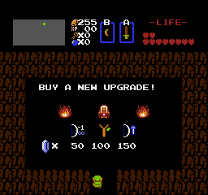
An upgrade cave: one upgrade from each tier.
Three caves on the overworld sell upgrades for rupees. Each seed picks up to 10 upgrades per tier for its shops.
Each cave offers one upgrade from each tier: tier 1 (25-50 rupees), tier 2 (75-125) and tier 3 (150-200).
The first time Link enters a cave, it takes the next upgrade in each tier's line that he can use. Those three stay in that cave from then on.
You can buy only one upgrade in each cave. After a purchase, its other two disappear.
Some upgrades need something first, like a bow or a candle. Others only appear in the first or second cave you find.
HINT The old men's hints about upgrades only mention ones that this seed can actually sell.
15
UPGRADE CATALOG: TIER 1
Ganon Visible 25
Ganon can no longer hide. He stays in plain sight for the whole fight.
Song of Chaos 25
Play the recorder on the overworld and the whirlwind always comes. It sets you down on a random safe screen.
Needs: Recorder and at least one triforce piece
Sword Beams 50
Your sword shoots beams at any health, not only when your hearts are full.
Needs: A sword. Not with Heart Snubber
Skull Ring 50
Bubbles can't touch you, so they can never take your sword away.
Blue Like Likes 50
Like Likes turn blue and weaker. They drop bombs when beaten, and one that grabs you eats a bomb instead of your Magical Shield.
Critter Crusher 50
Gels and Keese that touch you are stomped flat. No damage to you.
Potion Pouch 50
Potions stack. A blue potion adds one dose and a red one two, up to four doses.
Needs: A potion
Slow Fireballs 50
Enemy fireballs fly at half speed.
16
UPGRADE CATALOG: TIER 1 (CONT.)
Key Hoarder 50
Every key you pick up counts as two.
Unlimited Blue Candle 50
Your blue candle burns as often as you like, as the red one does.
Needs: Blue candle (not the red)
Miser's Bow 50
Arrows cost no rupees, but they hit a little softer.
Needs: Bow. Not with Bow of Greed
Refilling Bomb Bag 50
A new bomb grows in your bag every 90 seconds until it's full. Using a bomb restarts the count.
Needs: A bomb upgrade (or swordless mode)
Map Master 50
Every map at once: Levels 1-9 and all four shrines.
Poison Bait 50
The bait turns blue. Moblins, Goriyas and Octoroks that nibble it slowly sicken and die, and it lures Gibdos too. But Gibdos love it: it heals them.
Needs: Bait
Brain Potion 50
Every potion becomes a brain potion, which refills a zombie completely.
Needs: Zombie Link and a potion. Not with Bat Potion
17
UPGRADE CATALOG: TIER 2
Spider Bomber 75
Bombs hurt Gohma even with its eye shut.
Needs: A bomb upgrade
Zombie Link 75
Rare. See the Zombie Link page.
Needs: Exactly 3 hearts, no ring, no Regeneration
Boomerang Mastery 75
Your boomerangs hit 1 harder, so they hurt as well as stun.
Needs: A boomerang
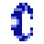
Heavy Bracelet 75
Lets you push certain heavy rocks on the overworld. What's behind them? The heavy rocks show grey once you have it.
Needs: Power Bracelet
Song of Discovery 75
Your recorder finds new places. Spots where it reveals something show a recorder once you have it.
Needs: Recorder
Boomstick 100
The wand's shot ends in a bomb blast where it hits a wall or a monster.
Needs: Wand. Not with Divining Rod
Sword Mastery 100
Your sword hits one step harder.
Needs: A sword. Not with Heart Snubber
18
UPGRADE CATALOG: TIER 2 (CONT.)
Rupee Speed 100
The more rupees you carry, the faster Link walks.
Statue Jammer 100
Dungeon statues stop firing at you.
Bow of Greed 100
Arrows hit twice as hard but cost 5 rupees a shot.
Needs: Bow. Not with Miser's Bow
Holy Fire 100
Candle fire burns the undead hard: Stalfos, Gibdos, Ghinis and Pols Voice. Even blue Pols Voice burn.
Needs: A candle
XP Boost 100
Rare. Enemies give double XP, bosses 5 more.
Needs: Fewer than 4 heart containers
Divining Rod 100
Your wand becomes a wooden rod. It only stabs (a little weaker, no magic shot), but every compass comes with it.
Needs: Wand. Not with Boomstick
Regeneration 125
Get back 1/4 heart for every 10 seconds you go without being hit.
Needs: Not with Zombie Link
Bat Potion 125
Every potion becomes a bat potion. Drink one and eight bats burst out and destroy ordinary enemies in their path (no XP or drops). Bosses are spared.
Needs: A potion. Not with Brain Potion
19
UPGRADE CATALOG: TIER 2 (CONT.)
Ghost Hunter 125
Every Ghini you defeat drops 5 rupees.
20
UPGRADE CATALOG: TIER 3
Fairy in a Bottle 150
When you fall, the fairy brings you back with up to 8 hearts. Visit a fairy fountain to catch a new one. While you have her, she shows beside your hearts.
Ganon Boomerang 150
Your boomerang can wound Ganon, as hard as your sword would.
Bombsmith 150
A bomb blast opens locked doors. No key needed.
Needs: A bomb upgrade
Bow Mastery 150
Arrows pierce Wizzrobes, Gleeok and Patra, and stun Dodongos on touch.
Needs: Bow and arrows
Healerang 150
Finish an enemy with your boomerang to heal 1/4 heart.
Needs: A boomerang
Shield Breaker 150
Strike Darknuts from the front. Their shields no longer block you.
21
UPGRADE CATALOG: TIER 3 (CONT.)
Membership Card 200
Every shop price is cut in half.
Needs: Only in the first upgrade cave you find
Heart Snubber 200
See the Heart Snubber page.
Needs: A sword, 3 hearts or fewer. Only in the second upgrade cave you find
Bookworm 200
Books teach twice as much: the red book adds 2 to every hit, the blue book 4. Until you own a book, a dungeon old man always offers the red book, and every shop sells it for 25 rupees.
Needs: Level 8 or higher
X-ray Glasses 200
In dungeons, walls you can bomb glow grey and walls you can walk through glow orange.
22
HEART SNUBBER AND ZOMBIE LINK
Heart Snubber 200
Only sold in the second upgrade cave you find, to a Link with 3 hearts or fewer. Link stays at 3 hearts for good, but his level keeps climbing. From level 4 his sword's power grows with him, up to 8. No new swords or sword upgrades are offered after that, and the hearts row shows a sword for every 2 levels.
Zombie Link 75
Rare. Only for a Link with exactly 3 hearts, no ring and no Regeneration. Link turns undead: his life drops to nothing (he keeps his containers) on purchase and after every continue.
Healing hurts: a potion drains half his hearts, a fairy 3, a heart 1.
Sword and wand swings deal double. Hits on Darknuts, Moblins, Goriyas, Lynels, Ropes and Wizzrobes heal him.
He takes double damage, but only half from the undead (Pols Voice, Gibdos, Ghinis, Stalfos).
Rings are never offered. Find the Brain Potion to refill him.
23
THE TRIFORCE CAVES
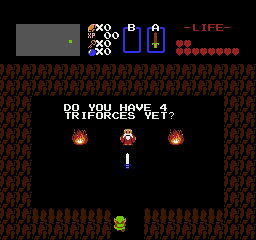
The 4-triforce cave.
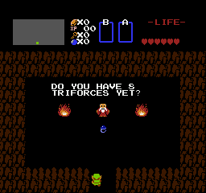
The 8-triforce cave.
4 Triforce Pieces
This old man rewards 4 triforce pieces with the first item Link is missing. Once he has the white sword, that's a book (red, then blue). Otherwise the white sword, then the bow, arrows, wand, ladder, recorder, bracelet, raft, book, boomerang and more.
All 8 Pieces
This old man gives the first item from this list that Link can still use:
Silver arrows, magic key, book (red, then blue), sword (white, then magical), ring (blue, then red), bow, ladder, recorder, power bracelet, raft, wand. With everything, a red potion.
HINT Each triforce cave gives its reward once.
24
SECRET MODES
Two secret modes are hidden in every game. How to find them is up to you. Some old men may know a thing or two.
Swordless
No sword for Link. Every offer of the white or magical sword becomes a bomb upgrade while Link holds fewer than 32 bombs.
Hard Mode
Link loses 2 heart containers (at least 1 is left). A heart container now takes 100 XP, and enemies grow stronger 3 hearts sooner.
HINT Some old men know more than they say.
25
THE END OF YOUR QUEST
After the credits, press START to see your final report. START flips between its two pages and SELECT goes on.
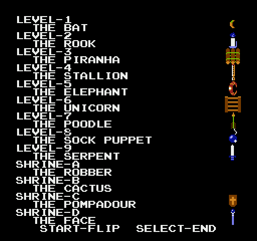
Page 1: every dungeon's nickname and its treasure.
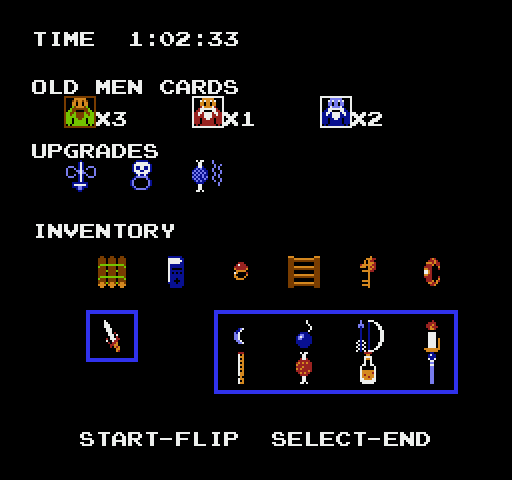
Page 2: time, cards, upgrades and inventory.
Page 1 lists Levels 1-9 and Shrines A-D with their nicknames and the item each old man or prize gave. Page 2 shows your time from the start of the file, your old men cards, the upgrades you bought and everything you carried.
RACE Same seed, same game: compare times with friends whose four-picture code matches yours.
26
OLD MEN'S HINTS AND TIPS
Levels 1-8 all hold an old man. Seek them out.
Shrines A-D have a prize if you make it to the end.
Blue Dodongos don't mind smoke.
The blue candle can only burn brown bushes.
Don't forget the push block in west Death Mountain.
Something is under the push block east of the waterfall.
Orange Gibdos are fast!
Blue Pols Voice can only be damaged with bombs.
Have you ever tried to poison that meat you have?
Grow too strong and Gleeok sees red.
GOOD LUCK, HERO!
Legend of Link is a free fan project and is not affiliated with or endorsed by Nintendo. You need your own copy of The Legend of Zelda (USA) to play.